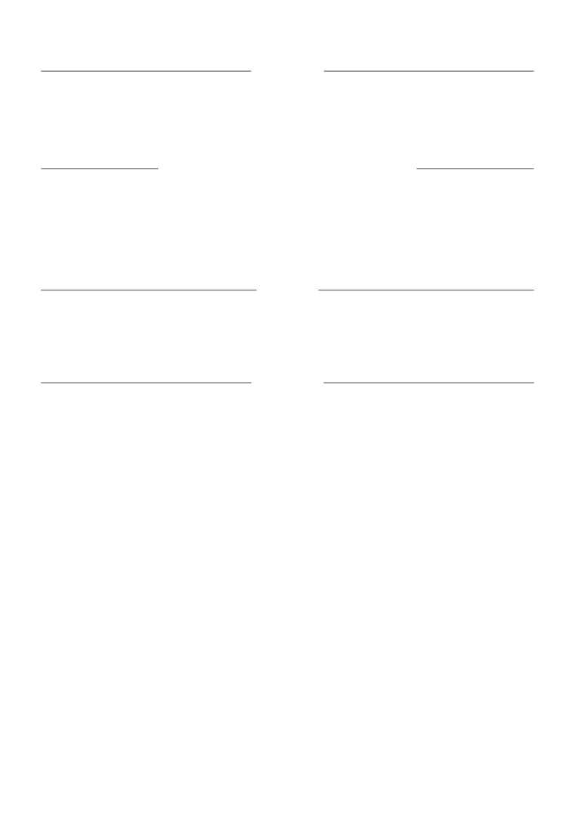

RUMYANA ATANASOVA
0878984486
|
rumyana.yordanova.atanasova@gmail.com
|
Ruse, Vladaja 8a
|
https://www.linkedin.com/in/rumyana-atanasova/
Reliable, teamwork-oriented physiotherapist with over 25 years of experience in working with patients. I have experience working with
patients from diverse medical history, experience with creating and supervising patients’ treatment in a team, and experience with
managing the medical documentation of my department.
EXPERIENCE
Senior Physiotherapist at Multi-profile Hospital for Active Healthcare - Rousse
Ruse, Bulgaria 2008-Present
Working in Department of Physiotherapy; main duties performed:
- Providing treatment for patients undergoing recovery from a wide range of accidents and surgeries.
- Examining patients’ conditions and establishing a treatment aiming for patients’ recovery.
- Teaming up with cardiologists, surgeons, orthopedic surgeons, GPs, nurses, consultants and social care workers in order to create
treatment strategies for patients.
- Working with children over the age of 5 who have a variety of medical conditions such as Cerebral palsy.
- Helping elderly people to recover from traumas and devising strategies to increase their mobility. Working with nurses,
orthopedic technicians and occupational therapists to align with patients’ needs of medical equipment.
- Liaising patients’ treatment with other physiotherapists. Managing the workflow of younger colleagues and overviewing their
progress.
- Working with specialised physiotherapy equipment and tools like Ultrasound Machines, devices for Magnetic therapy like The
Magneto Styms or Magnetic therapy units, Interferential Therapy devices, BTL Shockwave Therapy devices, etc.
- Examining the quality of treatment for patients in the department.
- Organizing medical records in the department and reviewing their quality.
Physiotherapist at Multi-profile Hospital for Active Healthcare - Rousse
Ruse, Bulgaria 1997-2008
Working in Department of Cardiology, main duties performed:
- Creating and managing rehabilitation programs for patients recovering from cardiovascular diseases.
- Working with patients recovering from Myocardial Infarction, Angina Pectoris, Hypotension, etc.
- Creating rehabilitation plans that includes: Healing Physical Therapy, crutch walking exercises, breathing exercises, etc.
Physiotherapist at Sports Complex Yalta
Ruse, Bulgaria 1989-1997
Main duties performed:
- Constructing rehabilitation programs for athletes who are undergoing recovery from sports injuries
- Organizing programs that help children with prophylaxis of Scoliosis.
- Supporting athletes’ recovery and wellbeing with the help of sauna sessions, underwater rehabilitation gymnastics, healing baths,
massage therapy, etc.
- Teaching Pilates and aerobics courses.
- Building and maintaining exceptional client relationships. Working with clients personally and tracking individual progress.
Supervising weekly nutrition and physical activity. Working front desk as well as with clients personally and in group classes.
Lab Technician at Petroleum Processing Plant ”Leon Tadjer”
Ruse, Bulgaria 1985-1986
Main duties performed:
- Quality control of lubricating oils.
- Working with oil products and oil refining equipment and tools.
EDUCATION
Bachelor’s degree at ”Angel Kanchev” University of Ruse
Ruse, Bulgaria 2004-2007
Subject: Kinesitherapy and Physiotherapy
Courses taken in: Physiology, Informational analysis of movement, Kinesitherapy in orthopedics orthotics and prosthetics, Kinesitherapy
in internal illness, Kinesitherapy in mental and nervous system illness, aerobics and Callanetics, Manual therapy, Kinesitherapy in elderly,
reflexotherapy, pharmacy, medical physiology and medical pedagogics.
Bachelor’s degree at Medical University Pleven
Pleven, Bulgaria 1986-1989
Subject: Physiotherapy
Courses taken in: Anatomy, Biochemistry, Biomechanics and Kinesitherapy, basics of Kinesitherapy, methods and tools, Kinesitherapy
and rehabilitation, Sports medicine, specialised rehabilitation methods, refectory massage, Working with medical statistics,
kinesitherapy in surgery, obstetrics and gynaecology and Pathology.

Secondary education at Prof. Dimitar Balarev” High school
Ruse, Bulgaria 1982-1985
Studied in profile specialized in oil and gas refining
LANGUAGES
Bulgarian: native language
Russian: CEFR C2 (Full Proficiency)
Hebrew: CEFR B1 (Intermediate Level)
English: CEFR B1 (Intermediate Level)
German: CEFR A2 (Elementary Level)
PROFESSIONAL TRAINING AND QUALIFICATIONS
Certificate
Sofia, Bulgaria 19.04.2017-21.04.2017
Modern methods of rehabilitation of Nervous system and locomotor apparatus illnesses. Functional electrical stimulation, soft tissue
techniques - post-mesmeric relaxation, massage techniques, traction and mobilization.
Certificate
Ruse, Bulgaria 20.12.2002
Working with computer systems. Working with Microsoft Windows OSes. Working with Microsoft Office Word, Excel, PowerPoint, and
working with Internet applications.
INTERESTS
• Gardening and growing flowers.
• Adopting animals and caring for them.
• Playing football, running, gymnastics and other sports.
• Reading, Listening to music and watching classic movies.
• Traveling and meeting with new people.
REFERENCES
Available at request